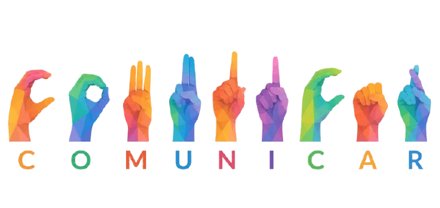
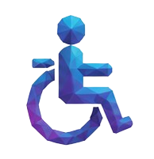
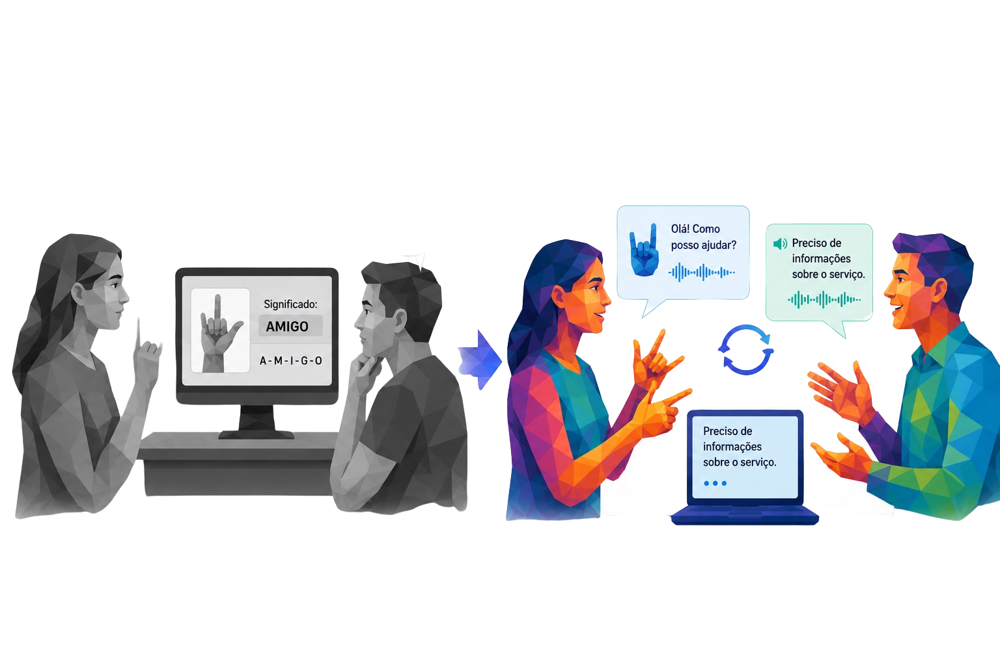

Brasil existem 2,3 milhões de pessoas com deficiência auditiva. Essas pessoas enfrentam varias desafios, principalmente na comunicação com pessoas não deficientes e que não sabem libras, o que dificulta gravemente aspectos da sua vida, como interagir com atendentes de mercados e bancos, e limita sua socialização apenas a um grupo limitado de pessoas.

A câmera identifica os movimentos das mãos, interpreta os sinais em Libras e converte automaticamente para fala.
A fala da pessoa ouvinte é capturada pelo microfone e transcrita em tempo real para leitura pela pessoa surda.

InclusãoPromove acessibilidade e autonomia para pessoas com deficiência auditiva.
Tradução instantânea para tornar o diálogo mais natural e eficiente.
Facilita atendimentos em hospitais, escolas, empresas e órgãos públicos.
Por mais que já existam alguns sistemas de tradução de libras, nenhum deles apresenta uma tradução em tempo real que permita uma comunicação bilateral e fluida, com eles servindo mais como uma ferramenta de aprendizado. Enquanto o nosso projeto tem como o foco a criação de uma meio de comunicação clara, simultânea e que atende diretamente ao problema, facilitando a comunicação com qualquer pessoa.

O Verbalize foi desenvolvido com o propósito de tornar a comunicação entre pessoas verbais e não verbais mais simples, rápida e acessível. Embora seu principal foco seja a tradução de Libras em tempo real, a plataforma também pode ser utilizada como uma ferramenta de apoio para estudantes, profissionais e qualquer pessoa interessada em aprender e praticar a Língua Brasileira de Sinais. Nosso objetivo é eliminar barreiras de comunicação, permitindo que surdos e ouvintes interajam de forma natural e eficiente, sem a necessidade de intermediários. Para isso, o sistema conta com uma interface cuidadosamente projetada para ser intuitiva, limpa e prática, garantindo que usuários de diferentes níveis de familiaridade com tecnologia possam utilizá-lo com facilidade no dia a dia.